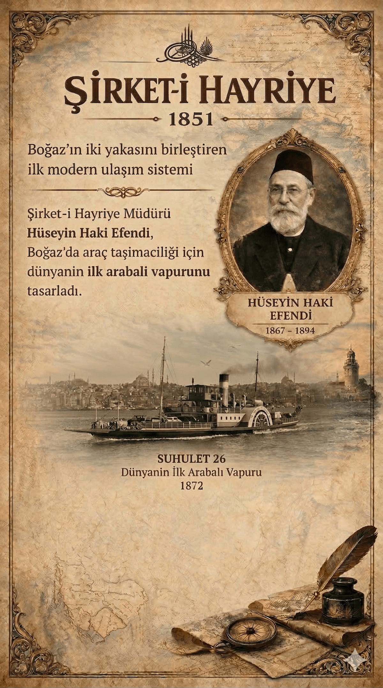

1825 – 1895
Şirket-i Hayriye Müdürü • 1866 – 1894
Dünyanın İlk Arabalı Vapurunun Mucidi
Bir Vizyonerin Portresi
1825'te Girit'in Kandiye şehrinde doğdu. Dokuz yaşında babasını kaybetti ve amcası tarafından Mısır Valisi Kavalalı Mehmed Ali Paşa'ya gönderildi. 1866 yılında Yusuf Kamil Paşa'nın tavsiyesiyle Şirket-i Hayriye'nin başına geçtiğinde, Osmanlı'nın ilk anonim şirketi batmak üzereydi. Filoyu 16 vapurdan 46 vapura çıkardı. Muhasebe sistemini modernleştirdi. Yolcu haklarını güvence altına aldı. Ve dünya denizcilik tarihine adını altın harflerle yazdıracak bir gemiyi tasarladı: Suhulet — dünyanın ilk arabalı vapuru.
Şirket-i Hayriye Hatları
Yılı seçin ve o dönemde hizmette olan iskele ve vapurları görün. Üzerlerine tıklayarak bilgi alın.


Şirket-i Hayriye kuruldu. İlk vapurlar İngiltere'den sipariş edildi. Boğaziçi'nde düzenli yolcu taşımacılığı başladı.
Hüseyin Haki Efendi, iflasın eşiğindeki şirketin başına getirildi. Muhasebe sistemini modernleştirdi, disiplini sağladı.
Hüseyin Haki Efendi'nin tasarladığı Suhulet, İngiltere'de inşa edildi. Hem yolcu hem araba taşıyabilen bu gemi, dünyada bir ilkti.
Yeni vapurlar filosuna katıldı. Sefer sıklığı artırıldı. Boğaziçi'nin kuzey uçlarına kadar düzenli ulaşım sağlandı.
Filo 40 vapura ulaştı. Şirket-i Hayriye, dünyanın en büyük yolcu taşıma şirketlerinden biri haline geldi.
Hüseyin Haki Efendi'nin 28 yıllık müdürlüğünün son yılı. İflasın eşiğindeki şirketi, 46 vapurluk bir filoya dönüştürdü.
İstanbul'un iki yakası arasında hem yolcu hem araba taşıyacak bir gemiye ihtiyaç olduğunu fark eden Hüseyin Haki Efendi, dünyada eşi benzeri olmayan bir vapur tasarladı. İngiliz tersaneciler bile böyle bir gemi daha önce yapmamıştı.
Prototipi Hasköy Tersanesi Sermimarı Mehmet Usta ve Müfettiş İskender Efendi ile birlikte çizdi. İngiltere'nin Maudslay, Sons & Field tersanesinde inşa edilen gemi, 1872 başında İstanbul'da hizmete girdi.
19. Yüzyılda Devrim
Bu yenilikler 1866–1894 yıllarında hayata geçirildi — bugünün iş dünyasının temel taşları, onun vizyonunun ürünüdür.
Muhasebede suistimali önlemek için çift yanlı kayıt sistemini zorunlu kıldı. Osmanlı'da bu sistemi uygulayan ilk kurumlardan biri oldu.
Vapurlarda yolcu şikâyet defteri bulundurulmasını başlattı. Dünyada müşteri odaklı hizmet anlayışının en erken örneklerinden biri.
Bekleme salonlarına vapur kalkış saatlerini gösteren çizelgeler ve duvar saatleri yerleştirdi. Dijital sefer tablolarının atası.
Her vapurda 8 adet cankurtaran simidi bulundurulması zorunluluğunu getirdi. Deniz güvenliğinin ilk sistematik uygulamalarından biri.
Hiç kimsenin yapmadığı bir gemiyi hayal etti, prototipi çizdi ve 1872'de hizmete soktu. 86 yıl boyunca Boğaz'da hizmet verdi.
İstanbul'un iki yakası arasında hem yolcu hem araba taşıyacak bir gemiye ihtiyaç olduğunu fark eden Hüseyin Haki Efendi, dünyada eşi benzeri olmayan bir vapur tasarladı. İngiliz tersaneciler bile böyle bir gemi daha önce yapmamıştı. Prototipi Hasköy Tersanesi Sermimarı Mehmet Usta ve Müfettiş İskender Efendi ile birlikte çizdi. İngiltere'nin Maudslay, Sons & Field tersanesinde inşa edilen gemi, 1872 başında İstanbul'da hizmete girdi.

S U H U L E T • 1 8 7 2 • K O L A Y L I K
Suhulet, Çanakkale Savaşı'nda topçu bataryaları taşıyarak vatan hizmeti gördü ve “Gazi” unvanı aldı. 1958 yılına kadar tam 86 yıl boyunca Boğaz'da yolcu ve araba taşımaya devam etti.
Kronoloji
Miras
Hüseyin Haki Efendi'nin vizyonu, sadece bir şirketi değil, İstanbul'un tüm ulaşım tarihini şekillendirdi. Boğaziçi'nin iki yakasını birbirine bağlayan modern deniz ulaşımının temelleri, onun 28 yıllık müdürlük döneminde atıldı.
Şirket-i Hayriye tarafından onun anısına adlandırılan ilk gemi. Boğaz hatlarında uzun yıllar hizmet verdi.
Cumhuriyet döneminde Haliç Tersanesi'nde inşa edilen araba vapuru. Onun mucit olduğu geleneğin devamı.
İstanbul'un deniz ulaşımı, onun attığı temeller üzerinde yükseliyor. Her vapur düdüğünde, Hüseyin Haki'nin vizyonu yankılanıyor.
“Bir vizyoner asla ölmez — sadece başka sulara yelken açar.”